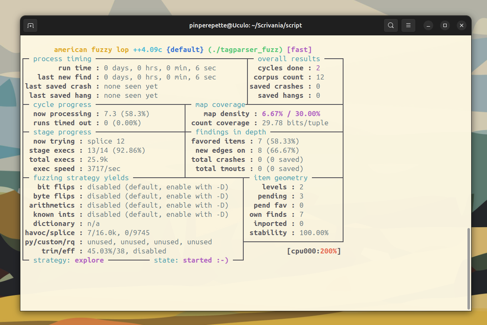
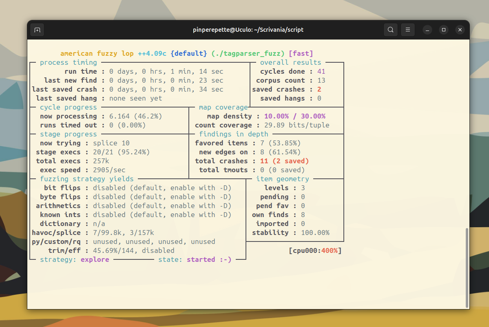
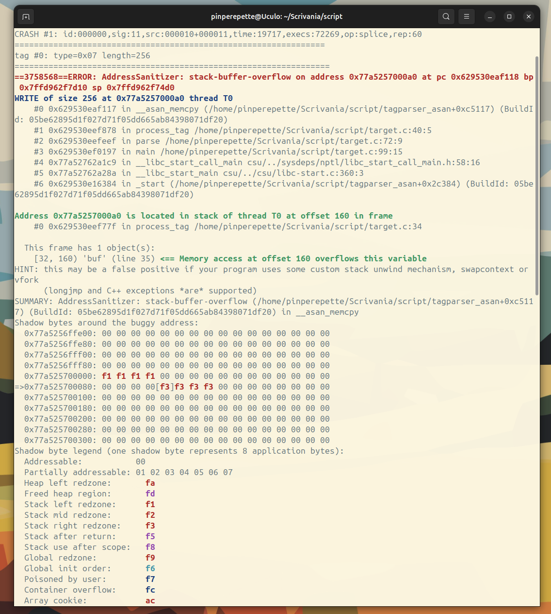
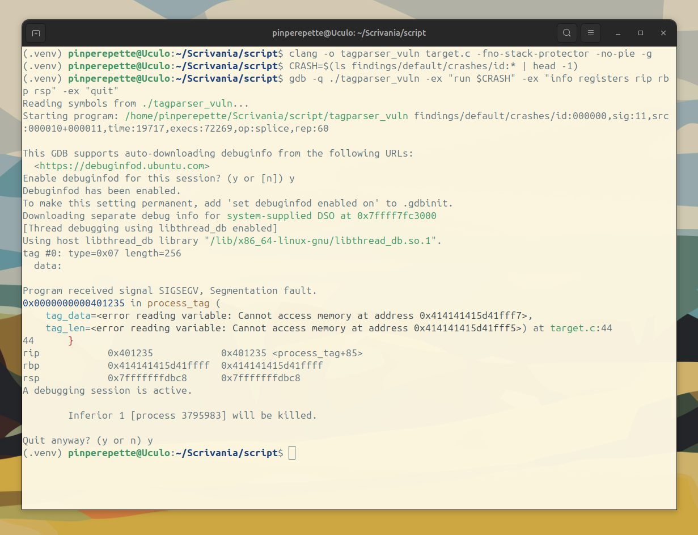
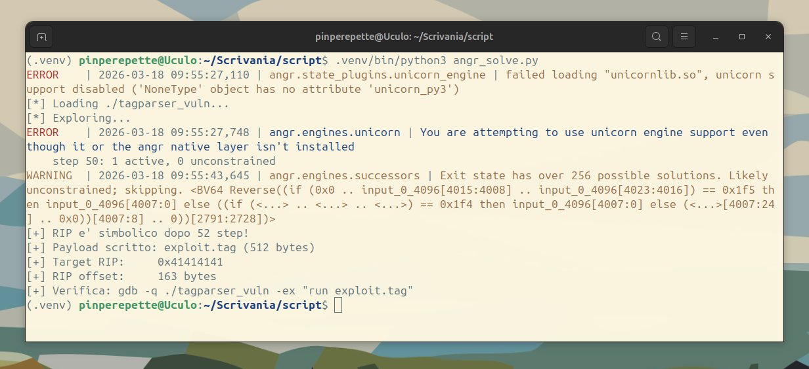

// Il Gap
Sezione 00. L'artigiano e la macchinaC'e' un mito nella security che resiste da trent'anni: trovare un bug e' scienza, scrivere un exploit e' arte. Il ricercatore trova il crash, poi si siede davanti a GDB, guarda i registri, conta i byte, calcola l'offset, costruisce il payload a mano, un byte alla volta. E' un lavoro artigianale. Bello da vedere, lento da fare.
Ho guardato un collega farlo per due giorni su un heap overflow in una libreria di parsing. Due giorni. GDB, Python, tentativi, bestemmie, caffe'. Alla fine ha scritto l'exploit. Funzionava. Era elegante. Era anche inutile.
Inutile perche' la stessa pipeline, automatizzata, ci mette minuti. Non due giorni. Minuti.
Il gap tra "ho trovato un crash" e "ho il controllo del flusso" si e' chiuso. Non perche' scrivere exploit sia diventato facile. Perche' il toolchain non scrive exploit: riduce lo spazio di ricerca finche' l'exploit diventa inevitabile.
La pipeline e' questa:
Oggi la costruiamo da zero. Su un target realistico, con codice che somiglia a quello che gira in produzione ovunque. Un parser binario in C con un bug che il 90% dei code reviewer non vedrebbe.
Disclaimer. Questo e' un laboratorio educativo. Il target e' un programma scritto da noi, fuzzato in locale, su una VM. Non fare fuzzing su software di terzi senza autorizzazione. Non usare queste tecniche per attaccare sistemi che non sono tuoi. Il fuzzing produce centinaia di file: fallo in un ambiente isolato.
// Il Target
Sezione 01. Il parser che tutti scrivonoIl target e' un parser di un formato binario custom: header con magic number, versione, numero di tag. Ogni tag ha un tipo (1 byte), una lunghezza (2 byte) e i dati. Tag-Length-Value. Lo stesso pattern che trovi in TIFF, PNG, TLS, PDF, ELF, DICOM, e in qualsiasi protocollo binario mai scritto.
Il codice e' pulito. Fa i controlli giusti. Verifica il magic. Limita il numero di tag. Controlla che ogni tag stia dentro il file. E poi fa una cosa che il 99% dei parser C fanno: copia i dati in un buffer locale senza verificare che la lunghezza stia dentro il buffer.
| 1 | #define BUF_SIZE 128 |
| 2 | |
| 3 | void process_tag(const uint8_t *tag_data, uint16_t tag_len) { |
| 4 | char buf[BUF_SIZE]; |
| 5 | |
| 6 | /* BUG: tag_len puo' essere > BUF_SIZE. |
| 7 | * Il chiamante verifica solo che tag_len |
| 8 | * non sfori il file, non che stia dentro buf. */ |
| 9 | memcpy(buf, tag_data, tag_len); |
| 10 | buf[tag_len] = '\0'; |
| 11 | |
| 12 | printf(" data: %s\n", buf); |
| 13 | } |
Riga 9. memcpy(buf, tag_data, tag_len). Il buffer e' 128 byte. tag_len e' un uint16_t, puo' arrivare a 65535. Il chiamante ha gia' verificato che tag_len byte esistano nel file. Ma nessuno ha verificato che stiano nel buffer.
Questo e' il bug piu' comune nella storia del software C. Non e' inventato. E' lo stesso pattern di CVE-2015-8668 (libtiff), CVE-2017-9233 (libexpat), CVE-2019-13118 (libxslt). Cambia la libreria, il bug e' identico.
Perche' un parser custom e non una libreria reale? Perche' il lab deve essere riproducibile al 100%. Su una libreria reale, il bug dipende dalla versione, dalla patch, dalla configurazione. Qui il bug e' garantito, il formato e' semplice, e la pipeline funziona end-to-end in pochi minuti. Il pattern e' lo stesso: se funziona qui, funziona su libtiff.
Il formato completo:
| 1 | /* File format: TAG\0 */ |
| 2 | |
| 3 | file_header_t { |
| 4 | uint32_t magic; /* 0x54414700 = "TAG\0" */ |
| 5 | uint16_t version; /* 1 */ |
| 6 | uint16_t num_tags; /* max 16 */ |
| 7 | } /* 8 byte */ |
| 8 | |
| 9 | tag_header_t { |
| 10 | uint8_t type; /* tipo del tag */ |
| 11 | uint16_t length; /* lunghezza dati */ |
| 12 | } /* 3 byte */ |
| 13 | |
| 14 | /* [header][tag0_hdr][tag0_data][tag1_hdr][tag1_data]... */ |
// Il Corpus e il Fuzzer
Sezione 02. Coverage-guided fuzzingAFL++ non genera input a caso. E' un fuzzer coverage-guided: muta l'input, esegue il programma, e tiene traccia di quali branch del codice sono stati raggiunti. Se una mutazione esplora un path nuovo, quell'input viene salvato nel corpus. Se no, viene scartato. E' evoluzione darwiniana applicata ai byte.
Per funzionare bene, AFL++ ha bisogno di due cose: un seed corpus (input validi da cui partire) e un harness (come dare l'input al programma). Il nostro programma legge da file, quindi il harness e' il programma stesso. Per il corpus, generiamo seed validi con un generatore Python.
| 1 | # seed_gen.py - genera seed validi per il corpus |
| 2 | |
| 3 | def make_seed(tags, version=1): |
| 4 | body = b'' |
| 5 | for tag_type, tag_data in tags: |
| 6 | body += struct.pack('<BH', tag_type, len(tag_data)) + tag_data |
| 7 | header = struct.pack('<IHH', MAGIC, version, len(tags)) |
| 8 | return header + body |
I seed coprono i casi base: un tag, due tag, tag con dati lunghi (ma dentro il buffer), tag con dati vuoti. AFL++ partira' da questi e mutera': flippera' bit, inserira' byte, cambiera' i campi length. Prima o poi, uno di questi mutanti avra' un tag_len > 128. E il programma crashera'.
Come funziona la coverage. AFL++ compila il target con afl-clang-fast, che inserisce instrumentazione a ogni branch. Durante l'esecuzione, ogni transizione A→B viene registrata in una bitmap da 64 KB. Due esecuzioni con bitmap diversa hanno coperto path diversi. Questa bitmap e' l'unico feedback che il fuzzer riceve: non sa cosa fa il programma, sa solo dove e' passato.
Compilazione e lancio:
// Il Primo Crash
Sezione 03. AFL++ trova il bugAFL++ parte. La dashboard si aggiorna. total paths, exec speed, stability. I primi secondi sono la fase deterministica: bit flip, byte flip, arithmetic, interest values. Poi passa alla fase havoc: mutazioni casuali aggressive.
Il contatore saved crashes e' a zero. Per ora.

Non ci vuole molto. Il fuzzer deve solo fare una cosa: generare un file dove il campo length di un tag e' maggiore di 128. Con mutazioni aritmetiche su un campo a 2 byte, ci arriva in pochi minuti. A volte in secondi.
saved crashes: 1

Il crash e' in findings/default/crashes/. E' un file binario di pochi byte. Guardiamolo:
Eccolo. Il campo length del tag dice 256 byte. Il buffer ne tiene 128. Il memcpy scrive 128 byte oltre la fine del buffer. Il programma crasha con SIGSEGV.
Ma un crash non e' un exploit. Un crash e' solo rumore. Dobbiamo capire cosa e' successo.
Prima di procedere, minimizziamo l'input:
afl-tmin rimuove ogni byte che non contribuisce al crash. Il risultato e' l'input minimo che trigghera il bug. Piu' piccolo e' l'input, piu' facile e' analizzarlo.
// ASan Parla
Sezione 04. Il bug ha un nomeAddressSanitizer e' un compilatore di diagnosi. Inserisce check a ogni accesso in memoria: heap, stack, globali. Quando qualcosa va fuori dai limiti, non crasha con un generico SIGSEGV. Ti dice esattamente cosa, dove, e quanto.
Ricompiliamo con ASan:
L'output e' una sentenza:

Senza leggere una riga di disassembly, sappiamo tutto:
| Proprieta' | Valore |
|---|---|
| Tipo | stack-buffer-overflow |
| Operazione | WRITE di 256 byte |
| Funzione | process_tag(), riga 40 |
| Variabile | buf, dichiarata a riga 35 |
| Buffer | 128 byte (offset 32-160 nello stack frame) |
| Overflow | 128 byte oltre la fine |
ASan non ti dice se il bug e' exploitable. Ti dice cosa e' successo. Il passo dopo e' capire se quel "cosa" controlla qualcosa di interessante.
Perche' -fno-stack-protector? In un sistema reale, il compilatore inserisce un stack canary tra il buffer e il return address. Se l'overflow lo corrompe, il programma abortisce prima di tornare dalla funzione. Nel lab lo disabilitiamo per mostrare la pipeline completa. Nella sezione difese vedremo come cambia tutto.
// Exploitable?
Sezione 05. Dal crash al controlloUn buffer overflow sullo stack sovrascrive tutto quello che sta dopo il buffer: variabili locali, il frame pointer salvato, e il return address. Quando la funzione fa ret, il processore legge l'indirizzo di ritorno dallo stack e ci salta. Se l'hai sovrascritto, il processore salta dove dici tu.
Compiliamo senza protezioni e verifichiamo con GDB:

rbp = 0x414141415d41ffff. Il frame pointer e' stato sovrascritto con i nostri byte (0x41 = 'A'). Il crash avviene dentro process_tag perche' la funzione prova ad accedere ai parametri attraverso il frame corrotto. Ma il punto e' un altro: se l'overflow corrompe rbp, corrompe anche il return address che sta subito dopo.
Quando process_tag fara' ret, il processore leggera' un indirizzo che abbiamo scritto noi. Se possiamo scriverci 0x41414141, possiamo scriverci qualsiasi indirizzo. E se possiamo scegliere dove salta il processore, possiamo eseguire codice arbitrario.
Ora la domanda diventa: a quale offset esatto, dentro l'input, si trova il return address? Potremmo calcolarlo a mano. Oppure possiamo lasciare che lo faccia la macchina.
// angr Trova la Via
Sezione 06. Symbolic executionangr e' un framework di analisi binaria. Fa molte cose, ma quella che ci interessa e' una: symbolic execution. Invece di eseguire il programma con dati concreti, lo esegue con dati simbolici, variabili matematiche. Ogni branch diventa un vincolo. Alla fine, un SAT solver trova i valori concreti che soddisfano i vincoli.
Tradotto: gli diamo il binario, gli diciamo "l'input e' simbolico", e gli chiediamo "trovami un input che rende RIP uguale a 0x41414141".
Lo script:
| 1 | proj = angr.Project('./tagparser_vuln', auto_load_libs=False) |
| 2 | |
| 3 | # 512 byte simbolici: ogni bit e' un'incognita |
| 4 | sym_input = claripy.BVS('input', 512 * 8) |
| 5 | |
| 6 | # Stato iniziale con file simbolico |
| 7 | state = proj.factory.full_init_state( |
| 8 | args=['./tagparser_vuln', '/tmp/angr_input'] |
| 9 | ) |
| 10 | simfile = angr.SimFile('/tmp/angr_input', content=sym_input) |
| 11 | state.fs.insert('/tmp/angr_input', simfile) |
| 12 | |
| 13 | # Cerca stati dove RIP e' simbolico (controllato dall'input) |
| 14 | simgr = proj.factory.simulation_manager(state, save_unconstrained=True) |
| 15 | |
| 16 | while simgr.active and not simgr.unconstrained: |
| 17 | simgr.step() |
| 18 | |
| 19 | # RIP e' simbolico: vincola al valore target |
| 20 | found = simgr.unconstrained[0] |
| 21 | found.solver.add(found.regs.rip == 0x41414141) |
| 22 | |
| 23 | # Estrai il payload concreto |
| 24 | payload = found.solver.eval(sym_input, cast_to=bytes) |
Cosa succede dentro:
1. angr carica il binario e crea uno stato iniziale con un file di 512 byte simbolici. Ogni byte dell'input e' una variabile con 256 valori possibili.
2. Il simulation manager esegue il programma simbolicamente. Ogni if nel codice crea un fork: uno stato dove la condizione e' vera, uno dove e' falsa. I vincoli si accumulano.
3. Quando process_tag fa ret, il valore di RIP viene letto dallo stack. Se lo stack e' stato sovrascritto con dati simbolici, RIP diventa simbolico. Lo stato finisce nella stash unconstrained.
4. Aggiungiamo un vincolo: RIP deve valere 0x41414141. Il solver Z3 risolve il sistema e produce un input concreto di 512 byte dove i byte all'offset giusto contengono esattamente \x41\x41\x41\x41. angr non e' intelligente. E' esaustivo. Non capisce il bug. Esplora tutte le strade finche' una funziona.
L'output:

163 byte dall'inizio del tag data al return address. angr l'ha calcolato da solo, senza che noi sapessimo nulla del layout dello stack. Verifichiamo:
RIP = 0x41414141. Esattamente il valore che abbiamo chiesto. La macchina ha scritto il payload che controlla il flusso.
Realta' moderna. Questo lab dimostra il controllo del flusso. In un sistema reale, arrivare all'esecuzione richiede bypass di ASLR, NX e spesso ROP. Il controllo di RIP e' il primo passo, non l'ultimo.
Nota: angr funziona anche senza Unicorn Engine (il warning failed loading unicornlib.so e' normale); sara' solo piu' lento.
// La Pipeline
Sezione 07. Uno scriptOgni passo che abbiamo fatto (compilare, generare seed, fuzzare, triagare, risolvere) e' uno script. pipeline.sh li concatena:
| 1 | #!/bin/bash |
| 2 | # pipeline.sh - Da sorgente a exploit. |
| 3 | |
| 4 | # 1. Compila il target (senza protezioni) |
| 5 | clang -o tagparser_vuln target.c -fno-stack-protector -no-pie -g |
| 6 | |
| 7 | # 2. Compila per AFL++ |
| 8 | afl-clang-fast -o tagparser_fuzz target.c -fno-stack-protector -no-pie |
| 9 | |
| 10 | # 3. Genera seed |
| 11 | python3 seed_gen.py corpus/ |
| 12 | |
| 13 | # 4. Fuzz (2 minuti) |
| 14 | timeout 120 afl-fuzz -i corpus -o findings -- ./tagparser_fuzz @@ |
| 15 | |
| 16 | # 5. Triage con ASan |
| 17 | clang -fsanitize=address -g -o tagparser_asan target.c |
| 18 | ./tagparser_asan findings/default/crashes/id:000000* 2>&1 |
| 19 | |
| 20 | # 6. angr: genera l'exploit |
| 21 | python3 angr_solve.py |
Un comando. ./pipeline.sh. Sorgente in ingresso, payload in uscita. Zero GDB. Zero offset calcolati a mano. Zero reverse engineering manuale. La pipeline trova il bug, lo classifica, verifica che sia exploitable, e genera l'input che controlla RIP.
Il tempo? Minuti, non giorni. Il collega ci ha messo due giorni.
// Le Difese Rompono la Pipeline
Sezione 08. Ogni mitigazione rompe un passoLa pipeline funziona perche' abbiamo compilato senza protezioni. Nel mondo reale, il compilatore e il sistema operativo mettono ostacoli a ogni passo. Vediamo dove.
| Difesa | Cosa fa | Cosa rompe |
|---|---|---|
Stack Canary |
Valore random tra buffer e return address. Se corrotto, abort() |
L'overflow sovrascrive il canary prima di RIP. Il programma muore prima del ret. Non arrivi mai a controllare RIP |
ASLR |
Randomizza indirizzi di stack, heap, librerie a ogni esecuzione | Anche se controlli RIP, non sai dove saltare. L'indirizzo della libc e' diverso ogni volta |
NX / W^X |
Lo stack non e' eseguibile. Puoi scriverci dati, non puoi eseguirli | Non puoi mettere shellcode sullo stack e saltarci. Devi usare codice gia' presente (ROP) |
CFI |
Control Flow Integrity. Ogni branch indiretto viene validato contro un set di target legittimi | Anche con ROP, i gadget devono rispettare il grafo di controllo. Attacchi arbitrari diventano impossibili |
Safe language |
Rust, Go, Java. Bounds checking a ogni accesso | Il bug non esiste. memcpy con lunghezza sbagliata e' un errore di compilazione o un panic a runtime |
Ogni difesa rompe un passo specifico della pipeline. Ma le mitigazioni non rompono la pipeline. La spezzano in piu' passi.
Stack canary? Il fuzzer puo' cercare bug che non passano dal canary: heap overflow, use-after-free, type confusion. ASan li classifica tutti.
ASLR? Se trovi un information leak (il programma rivela un indirizzo), puoi calcolare la base. angr puo' modellare anche quello.
NX? Return-Oriented Programming. Invece di eseguire shellcode, concateni frammenti di codice gia' presente (gadget). angr supporta la generazione automatica di ROP chain.
CFI? E' la difesa piu' forte. Limita severamente cosa puo' fare un attaccante anche con pieno controllo dello stack. Ma le implementazioni reali hanno gap: forward-edge CFI senza backward-edge, granularita' troppo larga, gadget conformi al grafo.
Il punto. Le difese non rendono gli exploit impossibili. Alzano il costo. Un bug che nel 2005 era exploitable in 10 minuti con uno script, nel 2026 richiede una catena di 3-4 vulnerabilita'. La pipeline deve diventare piu' sofisticata, ma il principio resta: prima cercavi il bug, poi cercavi come sfruttarlo. Oggi costruisci una pipeline. E lasci che sia lei a trovare entrambi.
// Gli Script
Sezione 09. Il laboratorioPrerequisiti. Ubuntu 22.04+ (o qualsiasi Linux con apt). Servono: clang, afl++, gdb, python3, angr (pip). Lo script setup_lab.sh installa tutto.
Gli script del lab. target.c: il parser vulnerabile. seed_gen.py: generatore di seed. fuzz.sh: compila e fuzza. triage.sh: analisi crash con ASan. angr_solve.py: symbolic execution per RIP control. pipeline.sh: l'intera pipeline in un comando. setup_lab.sh: installa i prerequisiti. Tutto nella cartella scripts/il-fuzzer-scrive-l-exploit su GitHub.
Il toolchain riduce lo spazio finche' l'exploit diventa inevitabile."
AFL++ non sa cosa sta rompendo. Sa solo dove non e' ancora passato. E continua finche' qualcosa cede. ASan non capisce il bug. Lo misura. angr non e' intelligente. E' esaustivo. L'umano decide cosa fuzzare e cosa farsene del risultato. Il resto e' automazione. Non e' che l'exploit sia diventato facile. E' che l'umano e' diventato il collo di bottiglia.
Signal Pirate